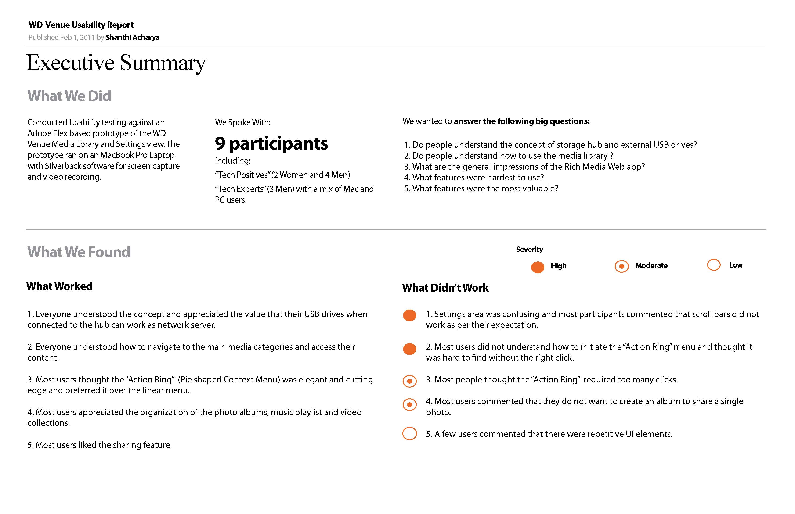

WD Media Library
Store & Share Media across the home and Internet
Background
WD network storage devices allow users to store and backup files from various devices including laptops, desktops, removable USB drives, and mobile devices. However primary access is through file servers and the onus is on the users to organize his/her media files. This approach was suited only for technical experts, but we wanted to expand our target user base to non technical expert users by providing a user friendly media library.
Objective
Design a next gen media library UI that can organize photos, music, videos and documents, provide rich media experience for viewing and allow easy sharing across the home and Internet.
My Role
Project Leadership, Competitive Analysis, Wireframing and Prototyping, Usability testing, Presenting the finding and recommendations to stakeholders and front end coding.
Personas
Based on survey feedback and working with product marketing we crafted our 3 target personas including : Tech Positive (Knows enough about technology), Tech Expert (Advanced users) and Tech Neutral (Less tech savvy)
Card Sorting
We conducted open card sorting with our target users. Based on their mental model we created information architecture for the system.
Wireframes
We created wireframes, taskflows for the functional areas of the UI including the content library,sharing media through social networks, administrative section for device and user managements. Below are some wireframes illustrations.
Prototype
We created Adobe flex prototype to gauge the usability of main sections of the UI and newer design elements such as the radial menu for actions and creating an album collections.
Usability Testing
We conducted 2 rounds of usability testing and iteratively fixed the UI and flows. Below is an executive summary of the usability tests & findings.
Final Design
I coded the front end styles and skins of the UI in Adobe Flex in collaboration with the UI Engineers. Below are some screenshots.